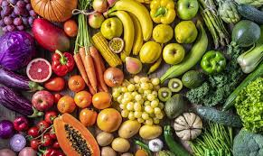
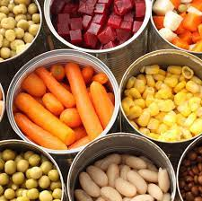

Tienda de Abarrotes "MCFUN" |
| Fecha de actualización: 26-Abr-2024 8:21 AM |
Bienvenido a MCFUN, tu destino favorito para todas tus necesidades de abarrotes. En nuestra tienda encontrarás una amplia sección de productos frescos, desde frutas y verduras hasta productos lácteos y carnes. Además, ofrecemos una variedad de productos secos, enlatados y de cuidado personal para satisfacer todas tus necesidades. Nuestro amable personal está siempre dispuesto a ayudarte a encontrar lo que buscabas y brindarte un excelente servicio. ¡Ven y descubre la diversión de comprar en MCFUN!
| Tipos de productos | Descripción general de los productos | Imagen |
|---|---|---|
| Frutas y verduras |
En MCFUN, nos enorgullecemos de ofrecer una amplia variedad de frutas y verduras frescas y de alta calidad. Nuestra sección de frutas está repleta de coloridas opciones, desde las clásicas manzanas, naranjas y plátanos hasta frutas más exóticas como mango, piña y kiwi. Además, contamos con una selección de bayas frescas, uvas jugosas y melones dulces para satisfacer todos los antojos. En cuanto a nuestras verduras, ofrecemos una amplia gama de opciones frescas y crujientes. Desde las verduras de hojas verdes como espinacas y lechugas, hasta los clásicos como tomates, pepinos y zanahorias. También encontrarás vegetales más especializados como brócoli, coliflor y espárragos, para agregar variedad y nutrición a tus comidas. Nuestro compromiso con la frescura y la calidad significa que nuestras frutas y verduras se seleccionan cuidadosamente y se mantienen en condiciones óptimas para garantizar que lleguen a ti en su mejor estado. |
 |
| Lácteos |
En MCFUN, nuestra selección de lácteos es incomparable. Trabajamos con los mejores proveedores para ofrecerte productos lácteos frescos y de alta calidad que satisfagan todas tus necesidades. Desde la leche fresca y cremosa hasta una variedad de yogures naturales y con sabores, tenemos todo lo que necesitas para tus necesidades lácteas. Nuestra sección de quesos es una delicia para los amantes del queso, con una amplia variedad que incluye desde quesos suaves y cremosos hasta opciones más fuertes y añejadas. También ofrecemos una variedad de mantequillas, margarinas y cremas para cocinar que son perfectas para darle ese toque extra a tus recetas favoritas. Además, no olvides explorar nuestra selección de huevos frescos, perfectos para desayunos nutritivos y deliciosos. Ya sea que estés buscando ingredientes para tu próxima receta o simplemente quieras disfrutar de un vaso de leche fría y unas galletas, en MCFUN encontrarás todo lo que necesitas en nuestra sección de lácteos. |
 |
| Carnes |
En MCFUN, nuestra sección de carnes es un paraíso para los amantes de los sabores auténticos y la calidad premium. Trabajamos con proveedores de confianza para ofrecerte una amplia variedad de cortes frescos y deliciosos que se adaptan a todas tus necesidades culinarias. Desde tiernas pechugas de pollo y jugosos filetes de res hasta sabrosas chuletas de cerdo y cortes de cordero, nuestra selección de carnes es incomparable. También ofrecemos una variedad de opciones de carne molida, salchichas y embutidos para tus comidas favoritas. Nuestro compromiso con la calidad significa que todas nuestras carnes se seleccionan cuidadosamente y se manejan con los más altos estándares de higiene y frescura. Ya sea que estés preparando una barbacoa en el patio trasero o una comida elegante para tus invitados, en MCFUN encontrarás todo lo que necesitas para satisfacer tus antojos de carne con los mejores productos disponibles. |
|
| Secos y Enlatados |
En MCFUN, nuestra sección de productos secos y enlatados es una excelente opción para aquellos momentos en que necesitas conveniencia sin sacrificar la calidad. Ofrecemos una amplia variedad de productos no perecederos que son perfectos para mantener en tu despensa y utilizar cuando lo necesites. En nuestras estanterías encontrarás una variedad de granos como arroz, frijoles, lentejas y pasta, así como una selección de cereales y harinas para tus necesidades de cocina y horneado. También contamos con una variedad de productos enlatados, que incluyen vegetales, sopas, salsas, atún, salmón y otros pescados enlatados, así como frutas en conserva. Nuestra selección de productos secos y enlatados es perfecta para crear comidas rápidas y nutritivas en casa, así como para mantener tus opciones de alimentos no perecederos bien abastecidas para cualquier emergencia. Ya sea que estés buscando ingredientes para una cena rápida entre semana o necesites abastecer tu despensa para el próximo mes, en MCFUN encontrarás todo lo que necesitas en nuestra sección de productos secos y enlatados. |
 |
UBICACIÓN:
| MCFUN | México, Hidalgo, Atitalaquia, Col. Centro, Santos Degollado |
|---|